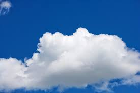
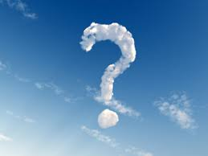

PORQUE?..
PORQUE O FOGO NÃO TEM SOMBRA?
Um objeto só projeta uma sombra quando a luz não passa através dele, apenas em volta dele. Como o fogo, ou melhor, a chama, contém pouca matéria, a luz passa facilmente através dela. Além disso, ela é uma fonte de luz, iluminando qualquer espaço escuro. Em experimentos controlados em laboratório, uma chama chega a absorver um pouco de luz de outra fonte (como, por exemplo, o raio laser), de modo que nem toda a luz passa pela chama; assim, ela poderia projetar uma sombra. No ambiente comum, a luminosidade própria impede a observação.
PORQUE AS NUVES SÃO BRANCAS?
Elas contêm uma grande quantidade de gotículas e pequenos cristais de gelo, que agem como pequenos prismas, decompondo a luz solar nas sete cores do arco-íris: vermelho, laranja, amarelo, verde, azul, anil e violeta. “Assim, para quem olha a nuvem, o resultado final é a soma de todas essas cores: o branco

PORQUE O CEU É AZUL?
A resposta para essa pergunta pode ser dada a partir de um fenômeno físico que ocorre na atmosfera denominado de espalhamento de Rayleigh. Como se sabe, a radiação solar que aquece a Terra é uma luz extremamente brilhosa e branca, mas composta por várias outras tonalidades de cor, cada qual com um comprimento de onda específico. O que ocorre é que, quando a luz penetra na atmosfera, ela atinge os átomos de nitrogênio e oxigênio, bem como as outras partículas que compõem a atmosfera, dando origem ao fenômeno do espalhamento que destaca a luz de cor azul
